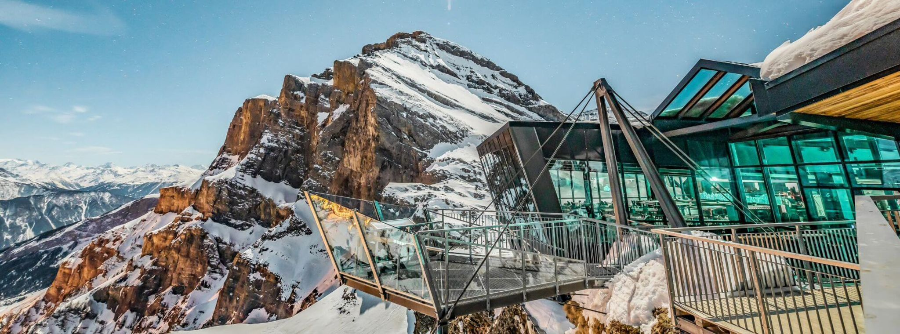
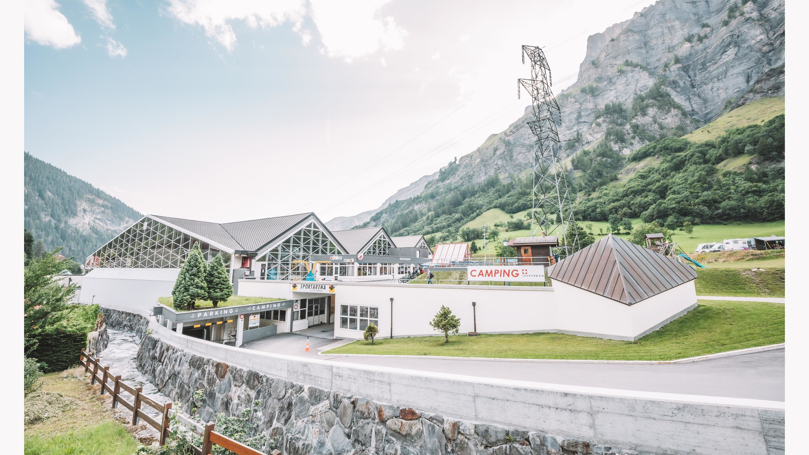
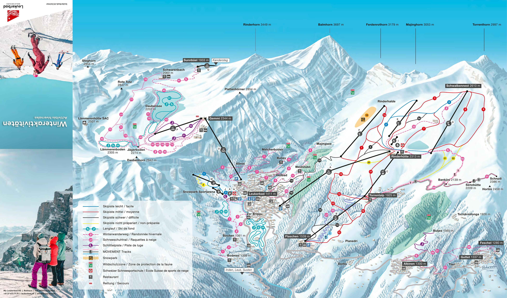
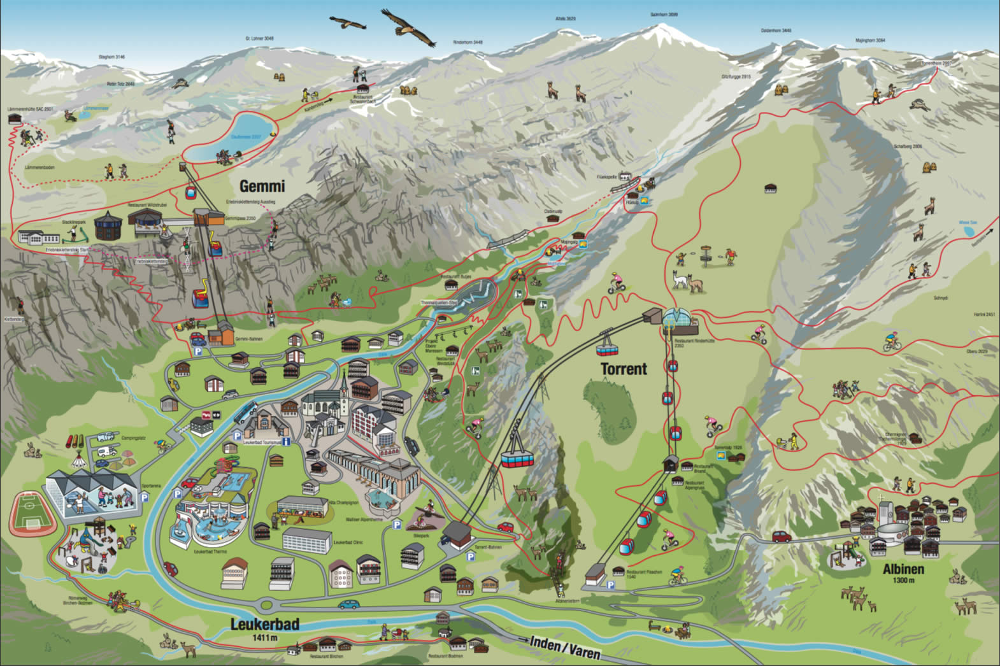

Scoprite il fascino di Leukerbad in ogni stagione: d'estate tra sentieri alpini, mountain bike, passeggiate romantiche e terme naturali; d’inverno tra sci, racchette da neve e wellness rilassante. Un mix perfetto di attività sportive, momenti rigeneranti e delizie culinarie.
Bagni termali di Leukerbad

Tre bellissimi centri termali: Leukerbad Therme, Walliser Alpentherme e Therme 51. Il più grande centro termale alpino d’Europa: 10 piscine termali (28–43 °C), scivoli, grotte naturali, sauna, massaggi e vista spettacolare sulle cime alpine.
Torrent

La funivia vi porta in quota tra percorsi invernali ed estivi di sci, trekking, slittino e bike, con panorami mozzafiato.
Gemmi

Accesso al suggestivo sentiero panoramico per la Daubensee e la Lämmerenhütte. Escursioni tra laghi alpini, sci di fondo, pista delle slitte, via ferrata e vista straordinaria.
Sportarena

Centro sportivo polivalente con tennis, palestra, boulder, pattinaggio, gonfiabili, minigolf, pumptrack e pista di ghiaccio: perfetto per le famiglie in ogni stagione.
Ristoranti
Assaggiate i sapori del Vallese: ristoranti di cucina tipica, enoteche e menu gourmet.
Cartina attività invernali
Consulta la mappa ufficiale delle attività: piste da sci, sentieri, snowpark e molto altro!

Cartina illustrata Leukerbad

Clicca sulla cartina per ingrandirla